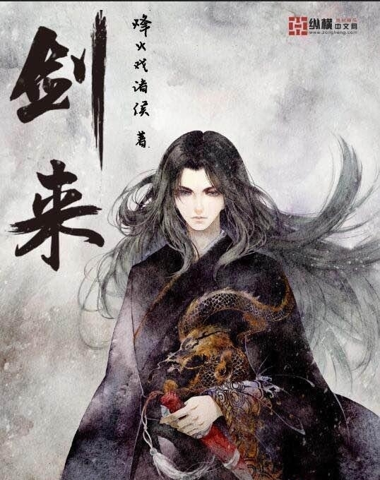
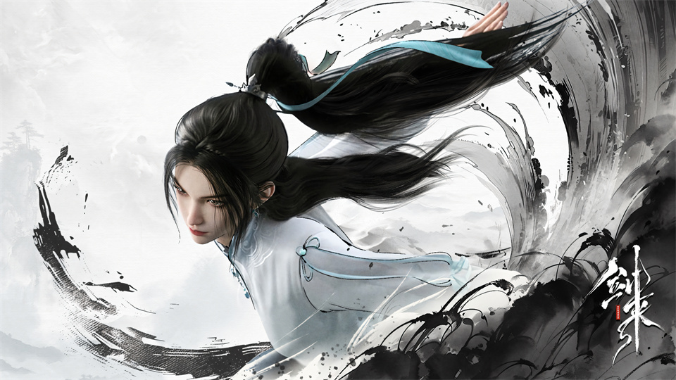

《剑来》是由网文作家烽火戏诸侯所创的玄幻小说，于2017年在纵横中文网发布。
《剑来》主要讲述了少年陈平安的成长故事。
陈平安是一个小镇的穷苦少年，父母早亡，他守着小镇的一口瓷窑。小镇看似普通，实则隐藏着诸多秘密。在机缘巧合下，陈平安踏上了江湖之路。
他身背长剑“笼中雀”和“井中月”，在江湖中结识了众多朋友和师长。在修行的过程中，陈平安面对的不仅是自身境界的突破，还要面对各种复杂的势力和理念的冲突。有以三教百家为代表的正统势力，也有暗中涌动的邪恶力量。
他在这个过程中，坚守自己的道理和本心，试图在这个人心复杂的世界中走出一条属于自己的道路。小说展现了一个广袤的仙侠世界，其中包含了仙侠战斗、人物的恩怨情仇、山川河海的壮丽景观描写，以及对儒、释、道等诸多哲学理念的思考与探索。


创作背景
从文化角度看，作品融入了儒、释、道等诸多中国传统思想。小说里的三教百家设定，如儒家的修身、济世理念，道家的无为、自然观念和佛家的慈悲、因果思想相互交织碰撞。这些传统思想构建了小说庞大复杂的世界观，使仙侠世界的架构不单是武力和法术的展现，更包含了哲学思考。在文学创作方面，烽火戏诸侯之前创作了多部作品，积累了丰富的写作经验。他试图通过《剑来》塑造一个更加宏大、细腻的世界。以主角陈平安的成长经历为主线，展现出一幅有深度的江湖画卷，描绘出不同人物的性格与命运，同时也反映出人性的复杂、善恶观念的交织等诸多内容。
剧情简介
《剑来》的故事围绕小镇少年陈平安展开。陈平安生活在一个看似平凡却暗藏玄机的小镇，父母早亡的他受尽苦难。小镇被“大骊”王朝盯上，打破了原有的平静。随着各方势力的角逐，陈平安被迫离开小镇。
离开小镇后，陈平安踏上了修行之路。他一边在江湖中闯荡，结交了许多志同道合的朋友，如宁姚、左右、崔东山等。一边面对各种强大的敌人和复杂的势力。在剑气长城，他参与对抗妖族入侵的惨烈战争，守护人间。
在修行方面，陈平安资质平凡但毅力非凡。他师从文圣等多位先生，学习儒、释、道等百家学问，不断提升自己的境界。他有两把剑“笼中雀”和“井中月”，剑技也在实战和修炼中逐渐精湛。
小说的世界中有着三教百家的势力划分，各方势力为了大道、气运等利益相互竞争。同时，世界背后还有着天庭共主时代的旧秩序残留与新崛起势力的博弈。陈平安就在这样复杂的环境中，坚守自己的道理，寻找“一”，在广袤的天地间历经磨难而前行。
